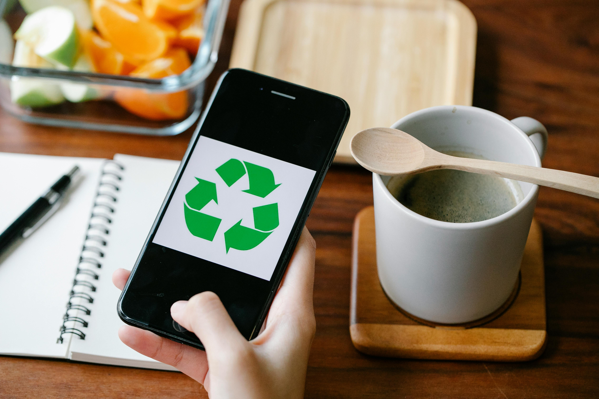
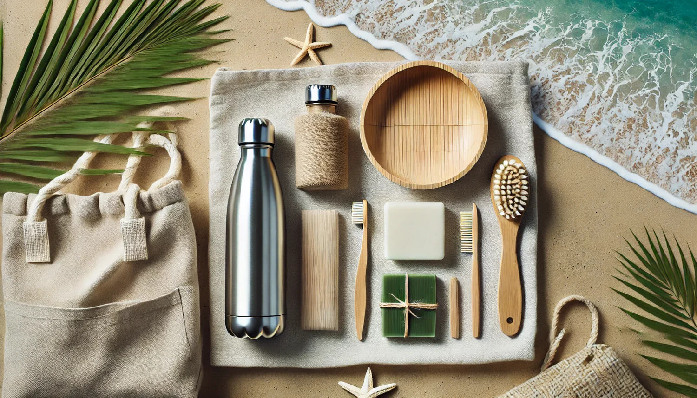

Student pledges and sustainable ocean lifestyles
This page looks at one practical part of SDG 14 using both global and Sri Lankan examples.
Everyday choices that affect the ocean
The condition of oceans is influenced by ordinary choices such as what we buy, how we dispose of waste, and whether we treat litter as acceptable. Sustainable living begins with recognising that environmental impact is built through repeated habits.

Building a personal sustainability pledge
A personal pledge gives structure to good intentions. It can include promises such as carrying reusable items, avoiding litter, reducing unnecessary plastic, joining one cleanup per month, or sharing awareness with others.
Food, shopping, travel, and waste habits
Ocean-friendly lifestyles are not limited to beach visits. Shopping with fewer disposables, choosing durable products, managing food waste more carefully, and reducing unnecessary transport-related waste all contribute to cleaner ecosystems.

Tracking your progress
Progress can be tracked with small monthly goals, such as reducing bottled drink purchases or joining one awareness activity. Tracking helps users stay accountable and see that sustainable behaviour becomes easier over time.
Becoming an advocate for cleaner coasts
Students who practice sustainable habits can also influence others. Advocacy does not always require public campaigns. It can begin with conversations, visible example-setting, and encouraging better behaviour in everyday spaces.